Every episode of Friends announces itself with the same ritual: a title card that begins “The One Where…” and instantly promises a small life event — a move, a breakup, a video shoot gone wrong. “The One Where Eddie Moves In” delivers all three at once. It is the episode in which Joey finally gets his solo apartment and a solo fountain, Chandler acquires a deeply strange new roommate, and Smelly Cat gets its very own music video, complete with a voice that does not actually belong to Phoebe.
The study companion built around this half hour — a deck assembled with an AI notebook tool, as the small “Gemini Notebook” credit in its corner admits — treats the episode as a full language course. Its opening promise reads: “An English Study Companion — Master real-world vocabulary, idioms, and 90s sitcom culture.” That promise is kept with moving boxes, recording studios, and childhood door-slamming, and this article walks through the entire set, from the first taped-shut box to the final discussion prompt. Pay attention to how much everyday English one sitcom can carry.
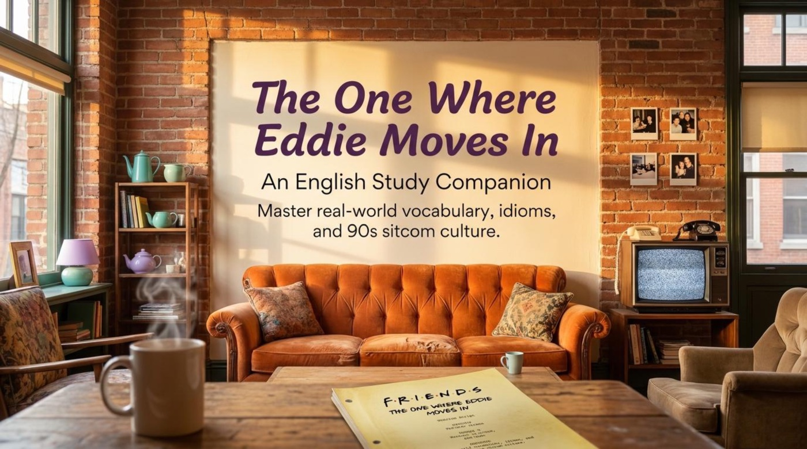
Part 01 · Content & Context
🎬 Three Stories, One Apartment Block
The deck opens on a kitchen fridge: three polaroid-style photos pinned under a handwritten headline — “Three stories of jealousy, success, and sibling rivalry.” The pictures stand for the episode’s three interwoven plots, and the companion labels each one in plain, learnable English:
- 📌 The Roommates: “Chandler gets a strange new roommate after Joey moves out.”
- 📌 The Musician: “Phoebe records a music video for ‘Smelly Cat’ but someone else’s voice is used.”
- 📌 The Siblings: “Ross spends too much time at Monica’s apartment, causing childhood tension to return.”
For a language learner this structure is a gift. Three storylines mean three clean vocabulary fields — home and moving, the music business, and family arguments — so every new word arrives with its own scene, its own emotions, and its own register. The episode also runs on conversational English rather than workplace jargon, which makes it ideal material for shadowing, role-play, and low-stakes imitation.
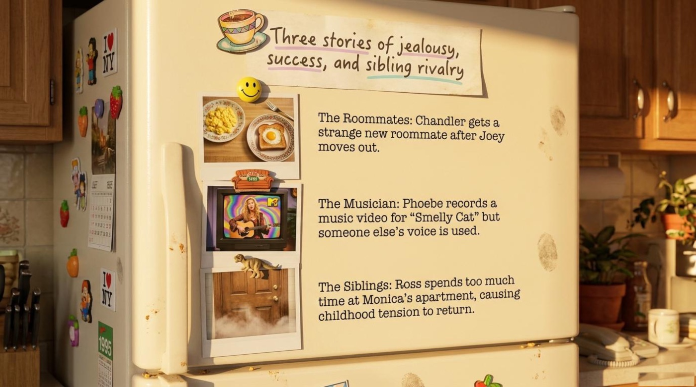
The Language of Changing Apartments
The moving-day page is stacked like real cardboard boxes, and each box carries a definition taped to its side. “Move in: To start living in a new place. Context: Eddie moves in with Chandler.” Next to it: “Move out: To leave your home and take your things. Context: Joey moved out of the apartment.” A third box bursts open with an explosion doodle: “Freak out: To suddenly feel extreme anger, fear, or excitement. Context: Phoebe tells her friends not to freak out about her record deal.” And the last one folds shut with a curling arrow: “Turn out: To happen or become known in the end. Context: It turns out Joey doesn’t like living alone.”
It is worth noticing how the deck teaches: every phrasal verb arrives with a definition and a context sentence drawn from the plot itself. That two-step formula — meaning first, story second — is exactly how to introduce new expressions to a study partner. A quick practice exchange shows the pattern in action:
— “And Eddie moves in today.”
— “It turns out Chandler misses the old breakfast routine already.”
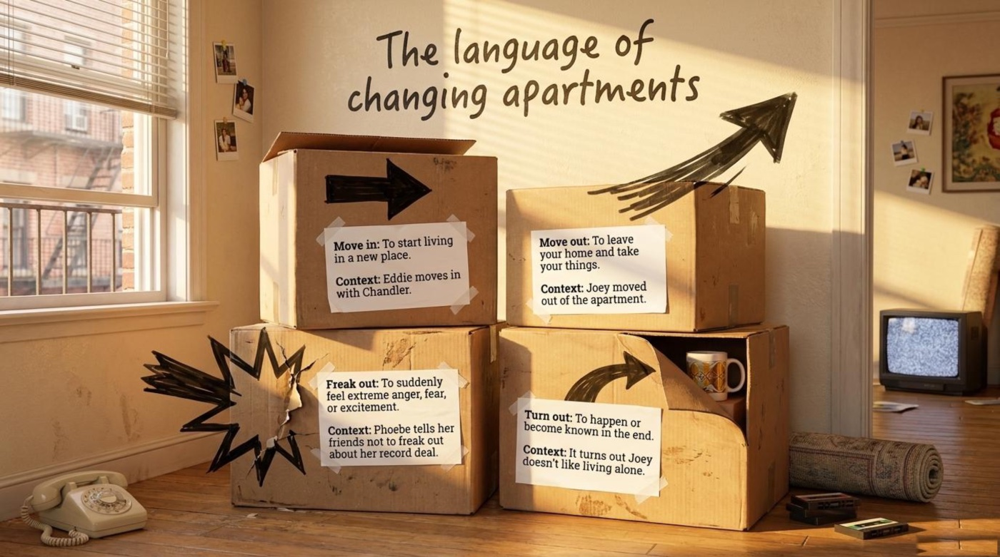
The Loneliness of the Solo Apartment
Joey’s storyline gives the lesson its emotional core. The banner over this page reads “The loneliness of the solo apartment,” and the cards underneath explain the comedy of bravado. “Having a ball: Enjoying yourself very much. Joey claims he is having a ball living alone, but he is actually lonely.” The same page introduces Joey’s bilingual flex, Casa de Joey — “Casa: Spanish for house, often used playfully in English. Example: Casa de Joey” — and Chandler’s accidental provocation: “Spare room: An extra bedroom not being used. Chandler claims he just had a spare room, making Joey jealous.”
Notice the gap between the words and the truth: Joey names his apartment like a resort and claims to be having a ball, while the scene shows him sitting alone in a dark room with takeout containers. This is advanced listening skill in miniature — understanding a line means hearing both the claim and the irony underneath it. The practical takeaway is to listen for the mismatch between confident language and sad visuals, because sitcoms hide their plots in exactly that space.
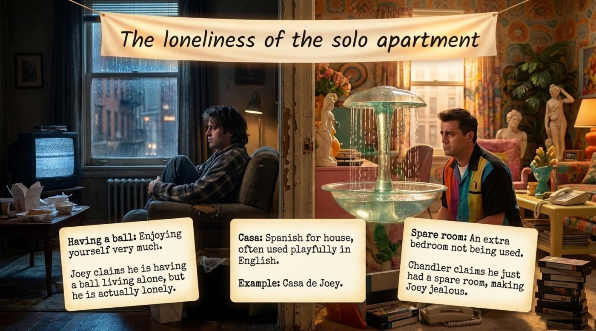
The Roommate Compatibility Matrix
Chandler’s replacement search is summarized on a notebook page titled “The Roommate Compatibility Matrix,” where Chandler and Joey turn out to be twins of taste and Eddie fails every row. Both friends “Loves Baywatch”; both take their “Eggs with a hole in the bread”; both play foosball. Eddie’s column, circled in red pen, reads “Hates it — just pretty people running around,” “Scrambled eggs,” and “Not into sports, prefers reading.” The handwritten verdict closes the case: “Total mismatch. Time to find new eggs.”
The matrix doubles as a real-life interviewing tool. Picture a roommate interview conducted in English: the candidate says, “I am not into sports — I prefer reading,” and the foosball table in your living room suddenly becomes a silent deal-breaker. 💡 Practical advice: build your own compatibility matrix before you share an apartment, and run the interview in English — TV preferences, breakfast, hobbies. It is the rare exercise where vocabulary practice can genuinely save you from a terrible living situation.
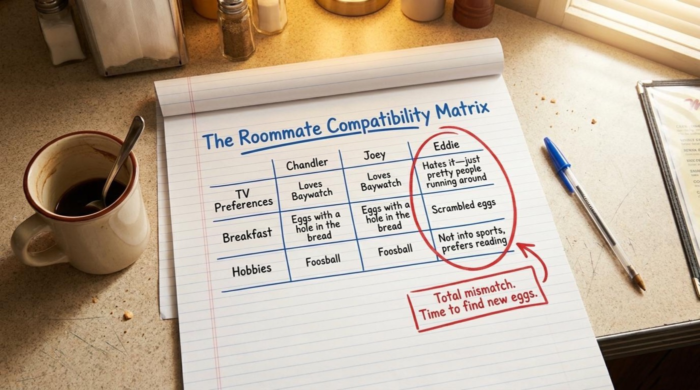
The Anatomy of a Rebound Roommate
Rachel, the group’s unofficial relationship scientist, diagnoses Chandler’s fast replacement on a café chalkboard headed “The anatomy of a Rebound Roommate.” The three steps read: “1. The Breakup: You lose someone important. You feel hurt.” — “2. The Panic: You quickly find a replacement to avoid feeling lonely.” — “3. The Rebound: The new person fills the physical space, but the connection isn’t real.” The dashed box underneath applies the theory to the plot: “Rachel predicts Eddie won’t last because he is just a rebound roommate — a quick distraction from Chandler missing Joey.”
The page borrows vocabulary from romance and grafts it onto friendship, a reminder that English loves to recycle emotional metaphors across different kinds of relationships. 💡 Practical advice: learn rebound once and you gain a portable concept — a rebound romance, a rebound job, a rebound hobby. Rachel’s calm prediction is also a model for delivering an uncomfortable truth gently, which is one of the most useful conversational skills in any language.
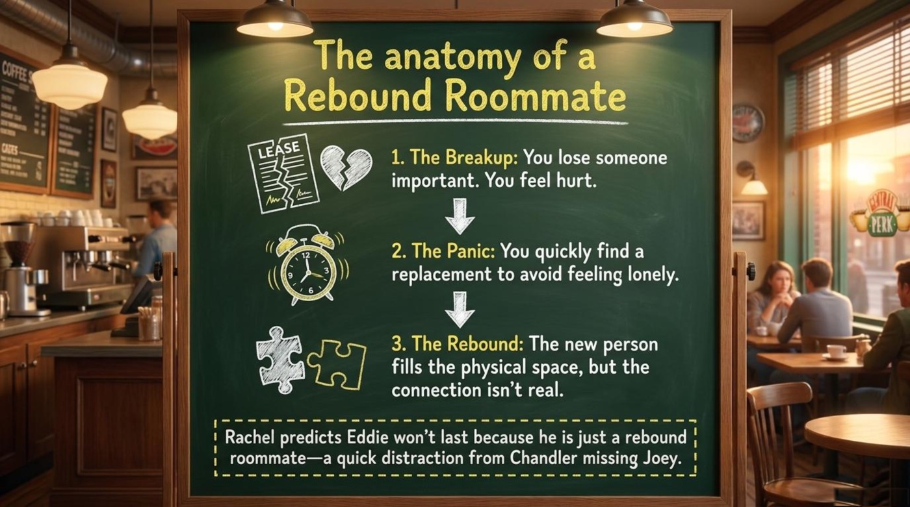
Breaking Into the Music Business
Phoebe’s storyline turns a recording studio into a vocabulary lab. The clipboard on the studio stand defines four industry words with example sentences. “Discovered: Finding someone with talent who is not famous yet. ‘I have just been discovered.’” — “Offbeat: Unusual, strange, but often in an appealing way. ‘A very fresh, offbeat sound.’” — “Demo: A sample recording made to show off a musician’s skills. ‘She wants to do a demo of Smelly Cat.’” — “Dubbed: Adding or replacing a voice on a video. Phoebe’s voice was dubbed by another singer.”
A short practice dialogue locks the terms in:
— “Do not freak out. Tell us about the record deal.”
— “They want to do a demo of Smelly Cat.”
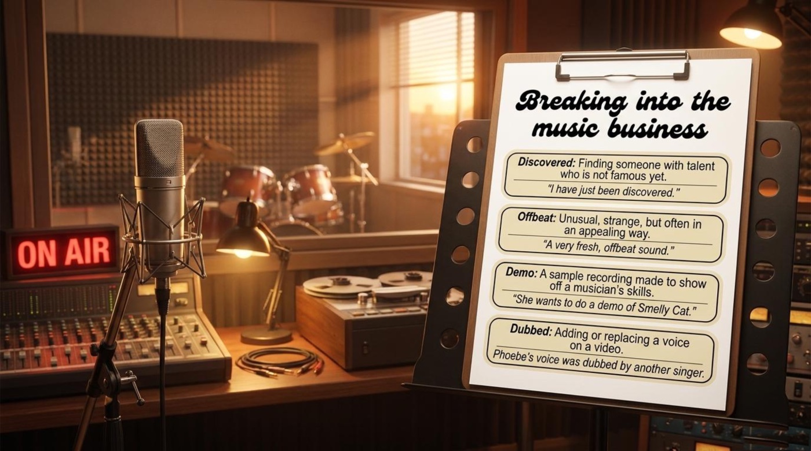
Part 02 · Vocabulary & Language Takeaways
📚 Vocabulary and Language Takeaways
The deck’s vocabulary clusters mirror the episode’s three plots, and the definitions always come glued to their scenes. Below, each entry gives the phrase, its plain meaning, its flavor in context, and the exact explanation the material provides. Read the entries first, then spin the flip-cards to test yourself — the whole episode is hiding in about fifteen expressions, and every one of them is an idiom or phrasal verb you can reuse the same day.
🏠 Apartment Life
move in (phrasal verb)
Meaning To start living in a new place. In the episode it is the promise and the problem of a brand-new chapter at home.
Example “Eddie moves in with Chandler.” — the title of the episode is this verb in action.
From the deck “Move in: To start living in a new place. Context: Eddie moves in with Chandler.” Definition plus plot context, ready to steal for your own notes.
move out (phrasal verb)
Meaning To leave your home and take your things. Figuratively, it is the first domino of the plot: one box out the door and the whole episode tumbles.
Example “Joey moved out of the apartment.”
From the deck “Move out: To leave your home and take your things.” Learn it as the mirror twin of move in.
freak out (phrasal verb)
Meaning To suddenly feel extreme anger, fear, or excitement. It covers both panic and over-excitement, so it works for terrible news and great news alike.
Example “Phoebe tells her friends not to freak out about her record deal.”
From the deck “Freak out: To suddenly feel extreme anger, fear, or excitement.”
turn out (phrasal verb)
Meaning To happen or become known in the end. It is storytelling’s soft-reveal tool: the gentle drumroll before a truth lands.
Example “It turns out Joey doesn’t like living alone.”
From the deck “Turn out: To happen or become known in the end. Context: It turns out Joey doesn’t like living alone.”
having a ball (idiom)
Meaning A ball was once a grand, glamorous party; the idiom means enjoying yourself very much — or, in Joey’s case, performing enjoyment very much.
Example “Joey claims he is having a ball living alone, but he is actually lonely.”
From the deck The card pairs the idiom with the irony directly, which makes it a model example of sarcasm detection for learners.
casa (noun, borrowed from Spanish)
Meaning Spanish for house. In playful English it brands an apartment like a resort: sunny, social, slightly ridiculous.
Example “Casa de Joey.”
From the deck “Casa: Spanish for house, often used playfully in English. Example: Casa de Joey.”
spare room (noun phrase)
Meaning An extra bedroom not being used. In context: dangerous real estate — mentioning one to a friend who just lost his roommate is how wars start.
Example “Chandler claims he just had a spare room, making Joey jealous.”
From the deck “Spare room: An extra bedroom not being used.”
🎸 Music Business
discovered (verb, past participle)
Meaning Found — and announced, with all the glitter implied. In the industry it means talent spotted before fame arrives.
Example “I have just been discovered.” — note the present perfect, the grammatical tense of breaking news.
From the deck “Discovered: Finding someone with talent who is not famous yet.”
offbeat (adjective)
Meaning Off the regular beat, out of rhythm; unusual, strange, but in an appealing way — a compliment in Phoebe’s world and a polite one in ours.
Example “A very fresh, offbeat sound.”
From the deck “Offbeat: Unusual, strange, but often in an appealing way.”
demo (noun)
Meaning Short for demonstration: a sample recording made to show off a musician’s skills — the music world’s business card.
Example “She wants to do a demo of Smelly Cat.” — notice the collocation: you do a demo.
From the deck “Demo: A sample recording made to show off a musician’s skills.”
dubbed (verb, past participle)
Meaning Adding or replacing a voice on a video. In the plot, it is the reason the voice on Phoebe’s video is not hers at all.
Example “Phoebe’s voice was dubbed by another singer.”
From the deck “Dubbed: Adding or replacing a voice on a video.” Passive voice, because the result matters more than the operator.
🚪 Sibling Warfare
dufus (noun, slang)
Meaning A silly, foolish, or stupid person. Playground-grade insult, more goofy than vicious.
Example “Get out, you dufus!”
From the deck “Dufus: A silly, foolish, or stupid person.”
hated your guts (idiom)
Meaning Your guts are your insides; the image means the dislike reaches all the way down. It describes disliking someone intensely — a past-tense, family-sized grudge.
Example “Basically, I hated your guts.”
From the deck “Hated your guts: To dislike someone intensely.”
pissing me off (phrasal verb, vulgar slang) ⚠️
Meaning Making me very angry. Register warning: strong informal language — natural between siblings and close friends, risky at work.
Example “You’re just gonna have to stop pissing me off.”
From the deck “Pissing me off: Making me very angry.” ⚠️ The material places it inside a childhood argument for a reason: this is how families actually talk, and knowing the register protects you.
get off my back (phrasal verb)
Meaning Stop nagging or criticizing me — the classic cry of a younger sibling under permanent surveillance.
Example It erupts in the Ross–Monica showdown, right in the middle of the reverted-to-childhood argument.
From the deck “Get off my back: Stop nagging or criticizing me.”
Read together, the three clusters tell the whole episode in miniature: boxes change direction, a voice is borrowed, and a door gets slammed. That is the quiet genius of sitcom-based learning — the vocabulary map and the plot map are the same map.
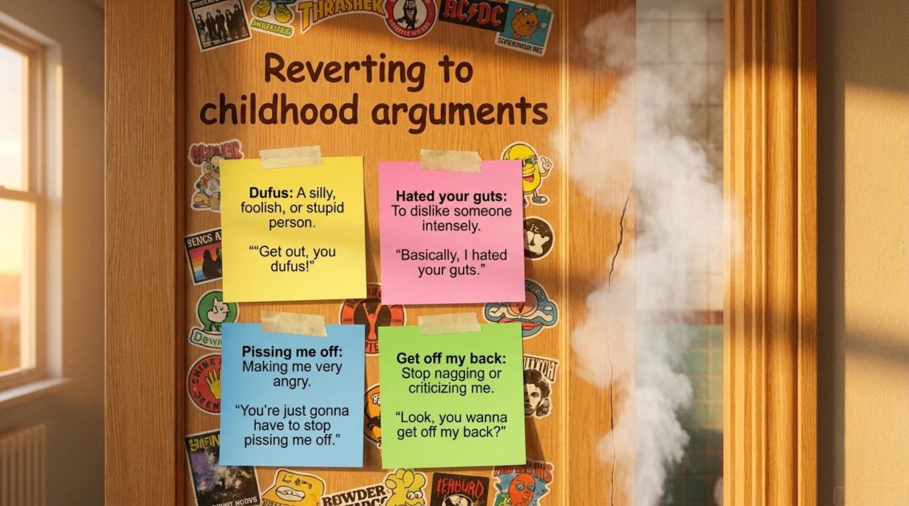
The deck below gathers eight of the most useful items as real flip-cards. Click or tap a card to turn it over, press Enter or Space while the card is focused, or use the button to flip the entire deck at once. 📌
Part 03 · Deeper Meaning
💡 Metaphors and Symbols
Smelly Cat: An Anthem for Outcasts
The deck gives Phoebe’s silly song a two-story house of meaning. The upper floor holds “The Literal Meaning: A song about a pet that smells bad and is fed the wrong food.” The lower floor holds the real thesis: “The Metaphorical Meaning: A song about outcasts — people who don’t have the ‘right look’ and are rejected by society, just like animals at the pound nobody wants.” The caption nails the emotional payoff: “Phoebe realizes the talented ‘voice woman’ was replaced because she wasn’t conventionally attractive. She IS the Smelly Cat.”
This is the strongest idea in the whole companion: a joke song becomes a mirror, and comedy smuggles in a serious argument about looks-based rejection. The dubbing scandal stops being a celebrity anecdote and becomes the exact experience the song describes. The key point for learners is that sitcom humor often carries its deepest message in its throwaway lines — and the phrase “That song has so many levels,” which titles this page, is itself a reusable English compliment for any deceptively simple art.
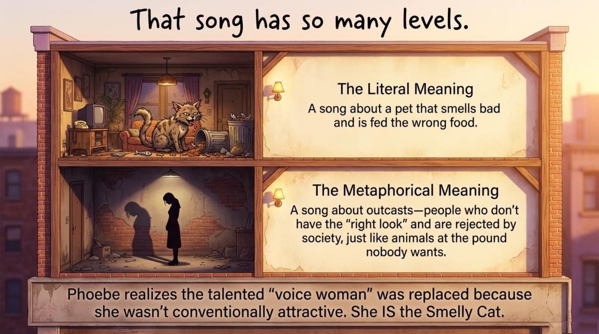
Reverting to Childhood Arguments
Ross and Monica’s storyline contributes a second symbol: regression. The page is titled “Reverting to childhood arguments,” and it is designed like a teenager’s bedroom door covered in stickers, with four sticky notes defining the ammunition. “Dufus: A silly, foolish, or stupid person. ‘Get out, you dufus!’” — “Hated your guts: To dislike someone intensely. ‘Basically, I hated your guts.’” — “Pissing me off: Making me very angry.” — “Get off my back: Stop nagging or criticizing me.”
The insight is linguistic as much as psychological: when adults regress to childhood roles, their language regresses too. Two successful adults in their twenties instantly reach for playground vocabulary the moment they share a kitchen again. For a learner, this page doubles as a register map — these expressions are real, common, and powerful, and the deck wisely shows exactly where they belong: between people who share a childhood.
“I’m Rubber, You’re Glue”: The Childhood Shield
The companion devotes a full page to the rhyme, illustrated with an actual tire and a bottle of glue and an arrow labeled “Insult.” The setup: “When Monica yells at Ross, Rachel suggests this classic children’s comeback.” The full text: “I’m rubber, you’re glue. Whatever you say bounces off me and sticks to you!” And the deck’s explanation: “Your insults cannot hurt me (they bounce off), but they reveal how terrible you are (they stick to you).”
Remember that this is nonsense physics doing serious emotional work. The rhyme turns an insult into a boomerang, and generations of English-speaking children have used it as verbal armor. Its presence in an adult sibling fight is the joke; its logic is the lesson. 💡 Practical advice: learn the full rhyme by heart — it is short, rhythmic, and unforgettable, which makes it perfect pronunciation practice as well as cultural literacy.
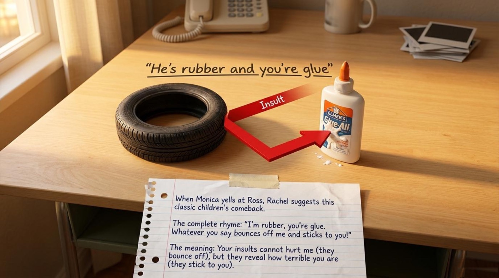
Casa de Joey: A Happy Name for a Lonely Place
The fourth symbol is the smallest one and possibly the most human. Joey brands his empty apartment “Casa de Joey” — a resort name for a place with one occupant and a decorative fountain. The naming is a coping mechanism: giving a space a grand, playful title temporarily transforms it into the social clubhouse it is supposed to be. The deck sees through the branding immediately, pairing the phrase with the truth that “Joey claims he is having a ball living alone, but he is actually lonely.”
The broader lesson is that people rename spaces to feel at home, and language learners do exactly the same thing with words. A learner who says “my casa” or “my crew” is not just borrowing vocabulary — they are furnishing a new identity in English. Joey’s fountain, in the end, is a vocabulary lesson about the difference between what we name and what we feel.
Part 04 · Comprehension Check
🧠 Episode Comprehension Check
The companion ends its review with a retro TV screen titled “Episode Comprehension Check,” showing four true-or-false statements with the answer key printed upside down at the bottom of the screen. The interactive quiz below expands those four statements into eight challenges drawn from every section of the material — story details, vocabulary in context, and the metaphors. Choose an answer to get instant feedback, watch the score counter climb, and use the reset button to run the whole check again.
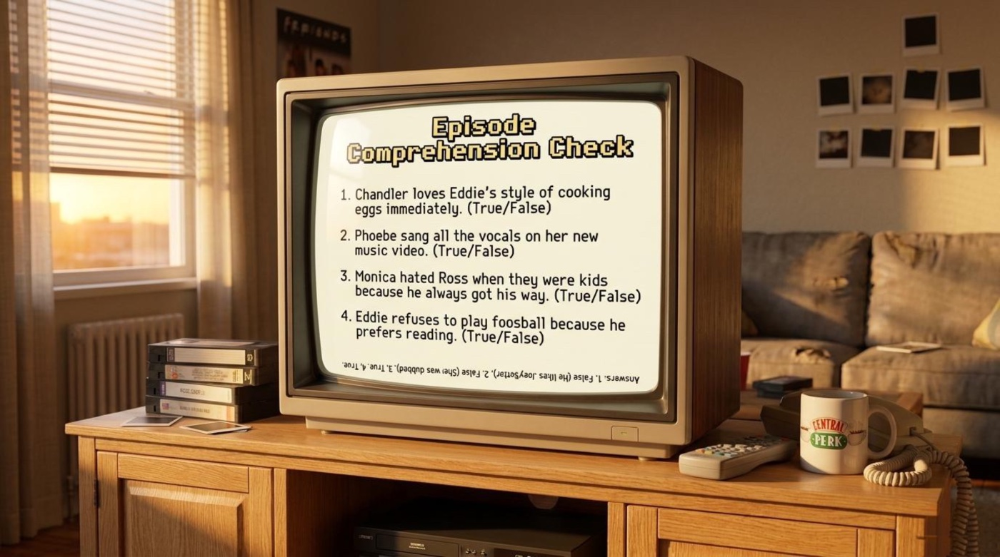
📺 Episode Comprehension Check
channel 2 · broadcast from Casa de Joey
The Final Frame
🎬 Share Your Casa
The deck ends not with a test but with a notebook on a café table next to a muffin and a latte: three discussion prompts and a standing instruction — “Share your answers with your study group or language partner.” The prompts invite you to describe a roommate situation that turned out poorly, to say whether people in the entertainment industry are judged too heavily on their looks, and to name the one habit a friend or sibling has that consistently gets under your skin. It is quietly clever curriculum design: the episode taught you the words for jealousy, success, and sibling rivalry, and the last page asks you to spend them on your own life.
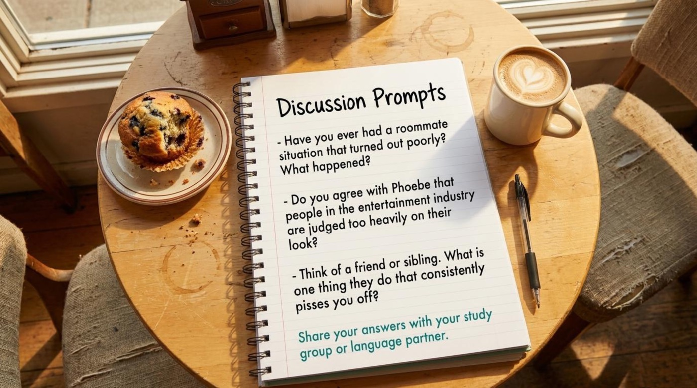
The main takeaway is the one the whole deck is built on: “Master real-world vocabulary, idioms, and 90s sitcom culture.” Language does not live on flashcards; it lives in apartments, studios, and kitchens where people bicker about eggs. Rewatch the episode with the companion in hand, keep a diary of every phrasal verb you catch, build your own compatibility matrix before your next shared apartment, and teach somebody the rubber-and-glue rhyme. Casa de English is open — move in. 📚